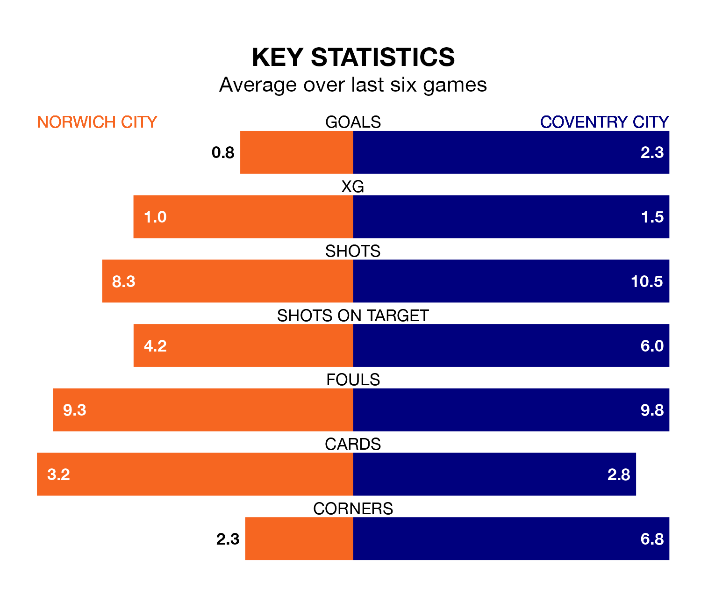

Coventry City face Norwich City on Saturday seeking to protect their formidable unbeaten run in EFL Championship.
The Sky Blues are unbeaten in 10, with six wins and four draws, ahead of the 3pm kick-off.
They face a Norwich team who have won four and drawn three over the same number of games.
With 46 goals in 29 games so far this season, Norwich are scoring more than average in the league with 1.6 goals per game. But they are conceding more than average too, letting in 44 goals at a rate of 1.5 per game.
Coventry are also above average scorers, with 1.6 goals per game, compared to a league average of 1.4. They have conceded 1.1 goals per game.
In the last 10 years, Norwich and Coventry have played each other on seven occasions. Norwich won five of them and they drew twice.
On average, the Canaries scored 2.7 goals and the Sky Blues 0.7 in those matches.
Their last meeting was on October 7, when they played out a 1-1 draw.
Coventry City are sixth in the table after 29 games, of which they have won 11 and drawn 11, earning 44 points.
Norwich City are four places behind the Sky Blues in 10th, with 12 wins and five draws putting them on 41 points.
In Jon Rowe, the Canaries have one of the league's sharpest shooters so far this season. He has notched 12 goals in 27 appearances, to sit fifth in the scoring charts.
His goal rate of one every 160 minutes is quicker than that of Haji Wright, the away side's top scorer with a goal every 205 minutes, and a total of eight goals in 27 games.
Norwich's last match was on January 24, a 1-0 loss against Leeds United.
Coventry drew 2-2 with Bristol City last time out, on Tuesday, with Ellis Simms and Tatsuhiro Sakamoto on the scoresheet.
Saturday's match will be refereed by Gavin Ward, who has taken charge of 14 EFL Championship games so far this season, issuing one red card and booking 57 players. He has awarded one penalty.
The last Norwich game Ward refereed was a 2-1 away win against Bristol City on December 3. His last Coventry match was their 2-2 draw at home against Swansea City on December 29.
Updated: 15:45 (UTC), 02/02/24